33 Carboxylic acids and derivatives
Carboxylic acids, esters, acyl chlorides and nucleophilic acyl substitution
33 Carboxylic acids and derivatives
本章对应 CIE 9701 2025–2027 syllabus 的 33.1 Carboxylic acids、33.2 Esters 与 33.3 Acyl chlorides。题目部分对应专题题包 7.5 Carboxylic Acids & Derivatives (A Level Only)；本地题包包含 Easy 与 Medium 两组 Structured Questions。
Learning objectives
学完本章后，你应该能够：
- describe the reactions and preparation of carboxylic acids, including oxidation of primary alcohols and alkylbenzenes;
- explain why carboxylic acids are weak acids and compare the acidities of substituted carboxylic acids;
- write equations for esterification and explain why the reaction is reversible;
- describe the preparation, reactions and relative reactivity of acyl chlorides;
- write complete equations for acyl chlorides reacting with water, alcohols, phenol and ammonia;
- describe the addition–elimination mechanism of nucleophilic acyl substitution;
- use reaction conditions and observations to identify suitable reagents in synthesis routes.
33.1 Carboxylic acids
Structure, naming and oxidation
A carboxylic acid contains the functional group \(\text{–COOH}\), also written as \(\text{–C(=O)OH}\). The carbonyl carbon is attached directly to a hydroxyl group. Examples include methanoic acid, \(\text{HCOOH}\), ethanoic acid, \(\text{CH}_3\text{COOH}\), and benzoic acid, \(\text{C}_6\text{H}_5\text{COOH}\).
Primary alcohols can be oxidised first to aldehydes and then to carboxylic acids. To obtain the acid, use acidified potassium manganate(VII) or potassium dichromate(VI), heat under reflux and use excess oxidising agent:
\[\ce{RCH2OH + 2[O] ->[acidified\ KMnO4][reflux] RCOOH + H2O}\]
An alkylbenzene with at least one benzylic hydrogen can also be oxidised all the way to a benzoic acid derivative. The side chain is oxidised, even if it contains more than one carbon atom:
\[\ce{C6H5CH3 ->[hot\ alkaline\ KMnO4][reflux] C6H5COO^- ->[dilute\ acid] C6H5COOH}\]
The purple manganate(VII) colour disappears. Depending on the conditions and the exact oxidising system, brown \(\ce{MnO2}\) may be observed as a precipitate. Acidification of the soluble benzoate gives benzoic acid.
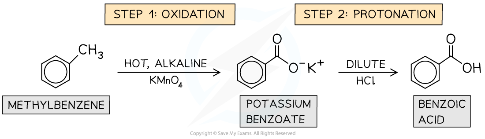
Worked example · Oxidation of methylbenzene
Conditions, observations and product
Methylbenzene is oxidised to benzoic acid. State suitable reagents and conditions, and state the observations.
Heat methylbenzene under reflux with hot alkaline potassium manganate(VII), \(\ce{KMnO4}\), using excess oxidising agent.
The purple colour of manganate(VII) disappears. A brown precipitate of \(\ce{MnO2}\) may form when manganate(VII) is reduced under alkaline conditions.
Acidify the benzoate product with dilute hydrochloric acid or another dilute mineral acid:
\[\ce{C6H5COO^- + H+ -> C6H5COOH}\]
The organic product is benzoic acid, \(\ce{C6H5COOH}\).
Weak acidity and the carboxylate ion
Carboxylic acids are weak acids because they ionise only partially in aqueous solution:
\[\ce{RCOOH(aq) <=> RCOO^-(aq) + H^+(aq)}\]
The conjugate base is a carboxylate ion. Its negative charge is delocalised over both oxygen atoms, so the ion is more stable than an alkoxide ion. This stabilisation makes loss of \(\ce{H+}\) more favourable, but the equilibrium still lies mainly to the left.
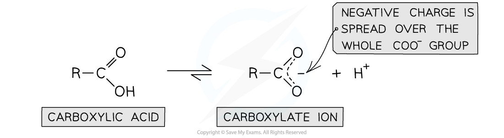
The strength of a carboxylic acid depends on substituents. Electron-withdrawing groups such as chlorine pull electron density away from the carboxyl group and stabilise the negative charge in the conjugate base. Therefore, 2-chloropropanoic acid is stronger than propanoic acid. Electron-donating alkyl groups have the opposite effect.
\[\ce{CH3CHClCOOH(aq) <=> CH3CHClCOO^-(aq) + H^+(aq)}\]
The closer the electron-withdrawing group is to the carboxyl group, the greater its inductive effect. Multiple chlorine atoms generally increase the acid strength further.
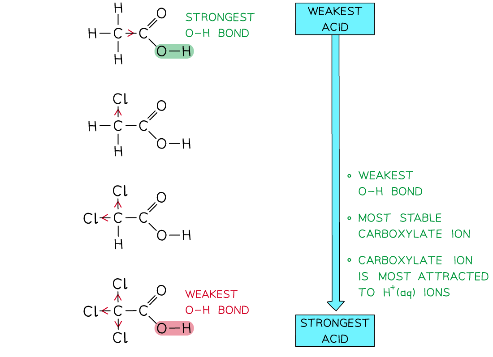
Worked example · Comparing carboxylic acid strength
Why chloro-substituted acids are stronger
Explain why 2-chlorobutanoic acid is a stronger acid than butanoic acid. Draw the skeletal formula of 2-chlorobutanoic acid and name a stronger chloro-substituted acid.
- Chlorine is more electronegative than carbon and has an electron-withdrawing inductive effect.
- It pulls electron density away from the carboxyl group and helps to disperse/stabilise the negative charge on the carboxylate ion.
- The O–H bond is therefore more polar and the acid loses \(\ce{H+}\) more readily.
- The skeletal formula is \(\ce{CH3CH2CH(Cl)COOH}\), with chlorine on the carbon next to the carboxyl group.
- One acceptable stronger acid is 2,2-dichlorobutanoic acid or 2,3-dichlorobutanoic acid, because it contains an additional electron-withdrawing chlorine atom.
Preparation of acyl chlorides from carboxylic acids
Carboxylic acids can be converted into acyl chlorides using reagents such as thionyl chloride, \(\ce{SOCl2}\), phosphorus(V) chloride, \(\ce{PCl5}\), or phosphorus(III) chloride, \(\ce{PCl3}\). For example:
\[\ce{CH3CH2COOH + SOCl2 -> CH3CH2COCl + SO2 + HCl}\]
\[\ce{CH3CH2COOH + PCl5 -> CH3CH2COCl + POCl3 + HCl}\]
With \(\ce{PCl5}\), steamy white fumes of hydrogen chloride are produced. Acyl chlorides are often prepared because they react more rapidly and more completely than the corresponding carboxylic acid in subsequent acylation reactions.

33.2 Esters
Esterification of a carboxylic acid and an alcohol
An ester contains the functional group \(\text{–COO–}\). Esters can be prepared by heating a carboxylic acid with an alcohol in the presence of concentrated sulfuric acid as a catalyst:
\[\ce{RCOOH + R'OH <=>[conc.\ H2SO4][heat] RCOOR' + H2O}\]
For example:
\[\ce{CH3CH2COOH + CH3OH <=>[conc.\ H2SO4][heat] CH3CH2COOCH3 + H2O}\]
The reaction is a condensation reaction because a small molecule, water, is eliminated. It is reversible, so the equilibrium does not give complete conversion. The ester is separated by distillation or another suitable purification method.

Worked example · Naming and writing an esterification equation
Methanol and propanoic acid
Methanol reacts with propanoic acid in the presence of concentrated sulfuric acid. Write the equation, name the organic product and explain why an acyl chloride can be used instead.
The alcohol contributes the alkyl group, methyl, and the acid contributes the carboxylate part, propanoate.
The equation is:
\[\ce{CH3OH + CH3CH2COOH <=>[conc.\ H2SO4][heat] CH3CH2COOCH3 + H2O}\]
The ester is methyl propanoate.
The carboxylic-acid esterification is slow and reversible, so the yield is limited by equilibrium.
Propanoyl chloride reacts much faster with methanol and the reaction effectively goes to completion, giving a higher yield. The by-product is \(\ce{HCl}\) rather than water.
Hydrolysis of esters
Esters can be hydrolysed using dilute acid and heat. The reaction is the reverse of esterification and is reversible:
\[\ce{RCOOR' + H2O <=>[dilute\ acid][heat] RCOOH + R'OH}\]
Alkaline hydrolysis uses aqueous sodium hydroxide and heat. It is effectively complete because the carboxylic acid is converted into a carboxylate salt:
\[\ce{RCOOR' + NaOH ->[heat] RCOO^-Na^+ + R'OH}\]
Acidification of the carboxylate gives the carboxylic acid:
\[\ce{RCOO^-Na^+ + H+ -> RCOOH + Na+}\]
The two parts of an ester are therefore identified by the acid-derived part ending in -oate and the alcohol-derived alkyl group.
33.3 Acyl chlorides
Structure, preparation and reactivity
An acyl chloride has the general formula \(\ce{RCOCl}\). It contains a strongly polar carbonyl group and a chlorine atom attached to the carbonyl carbon. The carbonyl carbon is electron deficient, so nucleophiles attack it readily.
Acyl chlorides are more reactive than esters, amides and carboxylic acids. Their general reaction with a nucleophile is nucleophilic addition–elimination:
- the nucleophile attacks the electron-deficient carbonyl carbon;
- the \(\ce{C=O}\) double bond opens temporarily to form a tetrahedral intermediate;
- the carbonyl bond reforms and a leaving group is eliminated.
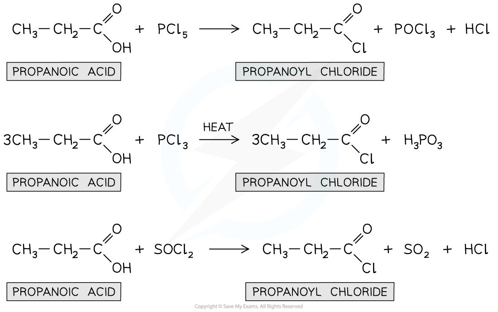
Reactions with water and alcohols
Acyl chlorides react vigorously with water at room temperature to form a carboxylic acid and hydrogen chloride:
\[\ce{RCOCl + H2O -> RCOOH + HCl}\]
They react with alcohols to form esters and hydrogen chloride:
\[\ce{RCOCl + R'OH -> RCOOR' + HCl}\]
For example:
\[\ce{CH3COCl + CH3CH2OH -> CH3COOCH2CH3 + HCl}\]
The reaction is faster and gives a more complete conversion than direct esterification of a carboxylic acid. Steamy white fumes of hydrogen chloride are produced.
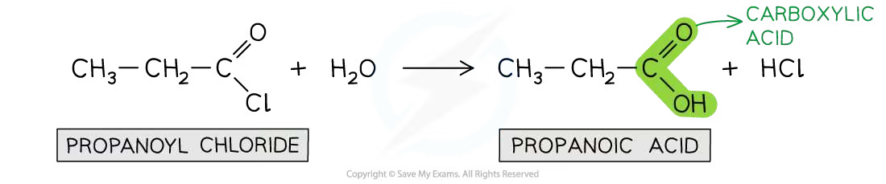
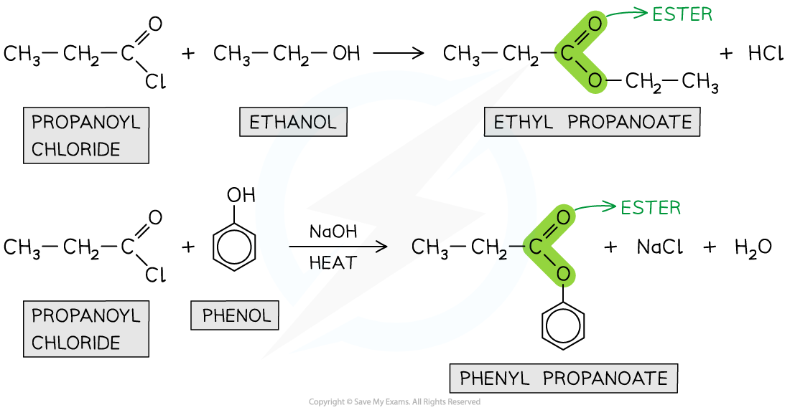
Worked example · Acyl chloride with an alcohol
Ethanoyl chloride and ethanol
Ethanoyl chloride reacts with ethanol. Complete the equation, name the organic product and state the other product. Explain why this is a condensation reaction.
Ethanol is the nucleophile and its oxygen attacks the electron-deficient carbonyl carbon.
Chloride is eliminated and the carbonyl group reforms.
The equation is:
\[\ce{CH3COCl + CH3CH2OH -> CH3COOCH2CH3 + HCl}\]
The organic product is ethyl ethanoate.
The other product is hydrogen chloride, \(\ce{HCl}\).
It is a condensation reaction because two molecules combine to form one larger organic molecule and a small molecule, \(\ce{HCl}\), is eliminated.
Reactions with ammonia and amines
Acyl chlorides react with ammonia to form primary amides. Two moles of ammonia are needed: one reacts as the nucleophile and the other neutralises the hydrogen chloride produced:
\[\ce{RCOCl + 2NH3 -> RCONH2 + NH4Cl}\]
With a primary amine, the product is an \(N\)-substituted amide and the second amine molecule forms an alkylammonium chloride salt:
\[\ce{CH3COCl + 2CH3NH2 -> CH3CONHCH3 + CH3NH3Cl}\]
The amide functional group is \(\ce{RCONH2}\) or a substituted form such as \(\ce{RCONHR'}\).
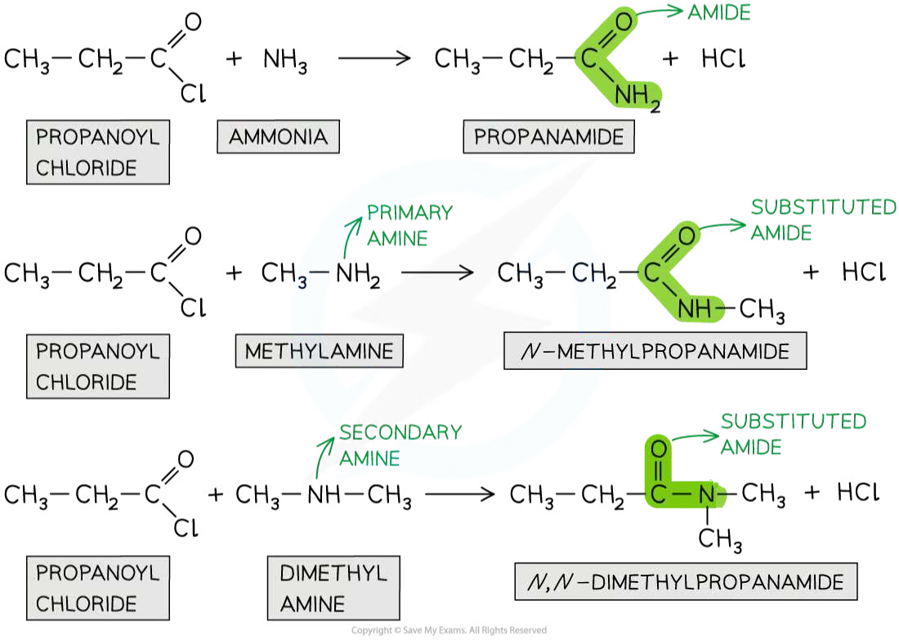
Worked example · Amide formation
Ethanoyl chloride with excess ammonia
Ethanoyl chloride reacts with an excess of ammonia. Write the equation and explain why two moles of ammonia are required.
The first ammonia molecule attacks the carbonyl carbon and chloride is eliminated, forming ethanamide.
Hydrogen chloride is produced in the substitution step.
A second ammonia molecule acts as a base and accepts the proton from hydrogen chloride.
The overall equation is:
\[\ce{CH3COCl + 2NH3 -> CH3CONH2 + NH4Cl}\]
The products are ethanamide and ammonium chloride. The second ammonia molecule prevents hydrogen chloride from remaining in the reaction mixture.
Reaction with phenol and relative hydrolysis rates
Phenol is a weaker nucleophile than an aliphatic alcohol because its oxygen lone pair is partly delocalised into the benzene ring. In alkaline solution, phenol is converted into phenoxide, which is a stronger nucleophile:
\[\ce{C6H5OH + NaOH -> C6H5O^-Na^+ + H2O}\]
The phenoxide ion reacts with an acyl chloride to form a phenyl ester:
\[\ce{CH3CH2COCl + C6H5O^- -> CH3CH2COOC6H5 + Cl^-}\]
The relative ease of hydrolysis is:
\[\text{acyl chloride} > \text{halogenoalkane} > \text{halogenoarene}\]
The acyl chloride is most reactive because the carbonyl carbon is strongly \(\delta+\) and the leaving group is chloride. In a halogenoarene, a halogen lone pair is delocalised into the aromatic \(\pi\) system, giving the C–Cl bond partial double-bond character. The aryl C–Cl bond is therefore stronger and harder to break.
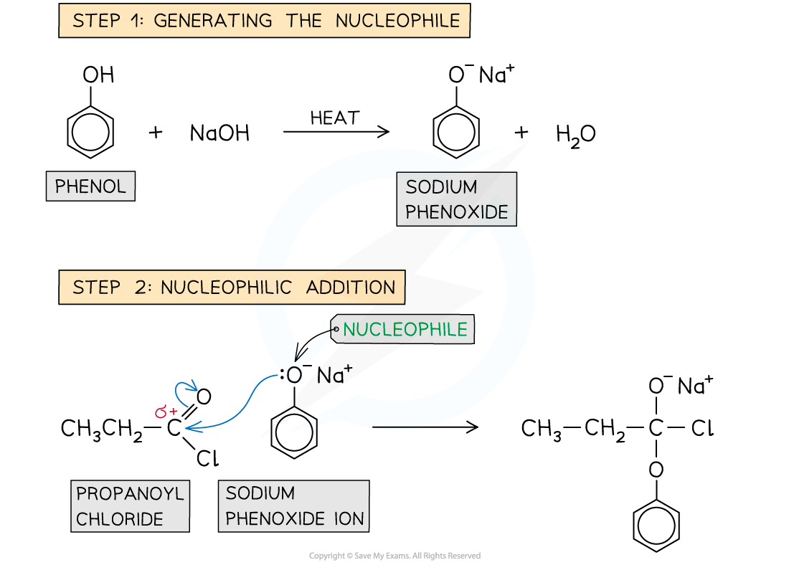
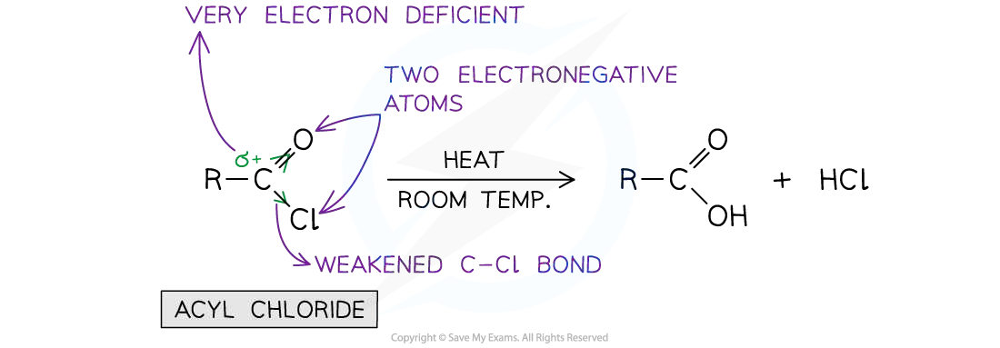
Worked example · Planning a phenyl ester synthesis
Phenyl propanoate
Describe how to prepare phenyl propanoate from propanoic acid and phenol. Explain why the acyl chloride is prepared before the phenol is added.
Convert propanoic acid into propanoyl chloride using \(\ce{PCl5}\), \(\ce{PCl3}\) or \(\ce{SOCl2}\):
\[\ce{CH3CH2COOH + PCl5 -> CH3CH2COCl + POCl3 + HCl}\]
Add the propanoyl chloride to phenol in the presence of aqueous sodium hydroxide and heat.
Phenol is converted into phenoxide, which attacks the electron-deficient carbonyl carbon.
The product is phenyl propanoate, \(\ce{CH3CH2COOC6H5}\).
The acyl chloride route is used because it reacts rapidly and effectively goes to completion. Direct reaction of propanoic acid with phenol is slow and reversible, so it gives a lower equilibrium yield.
Relative reactivity summary
For nucleophilic acyl substitution, learn the following order:
\[\text{acyl chloride} > \text{ester} > \text{amide}\]
For the chloro-compound comparison used in structured questions:
\[\text{acyl chloride} > \text{halogenoalkane} > \text{halogenoarene}\]
Always identify the electron-deficient carbon, the nucleophile, the leaving group and the product functional group.
Chapter checklist
Structured questions
7.5 Carboxylic Acids & Derivatives (A Level Only) - Structured Questions
本页保留题包中的全部 Structured Questions。当前题包包含 Easy 与 Medium，没有独立 Hard PDF，因此不虚构 Hard 题目。题目保留完整英文题干、所有分问、原始分值和题目中的独立图；答案按 Model Answers 整理，并把机制题、计算/合成题和观察题的解答步骤完整呈现。
7.5 Carboxylic Acids & Derivatives (A Level Only) - Easy
Example 1 · Acyl chloride reactions · 7.5 SQ Easy Q1
This question is about acyl chlorides.
(a) Fig. 1.1 shows the displayed formula of an organic compound.
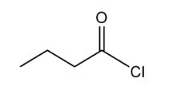
Name the organic compound. [1 mark]
(b) Ethanoyl chloride reacts with ethanol as shown in Fig. 1.2.
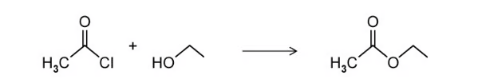
State the name of the other product. [1 mark]
State the type of reaction. [1 mark]
Ethanoyl chloride reacts with ammonia. Write an equation for this reaction. [2 marks]
Propanoyl chloride can be prepared from propanoic acid. State a reagent that can be used and write the equation for the reaction. [3 marks]
Show mark scheme / model answer
(a) The compound is butanoyl chloride.
[1](b) The other product is hydrogen chloride, \(\ce{HCl}\). The reaction is a condensation reaction because a small molecule is eliminated when the larger ester molecule forms.
[2]With ammonia:
\[\ce{CH3COCl + 2NH3 -> CH3CONH2 + NH4Cl}\]
Ethanamide and ammonium chloride are formed. The second ammonia molecule neutralises the hydrogen chloride produced in the substitution step.
[2]One suitable reagent is thionyl chloride, \(\ce{SOCl2}\):
\[\ce{CH3CH2COOH + SOCl2 -> CH3CH2COCl + SO2 + HCl}\]
Phosphorus(V) chloride, \(\ce{PCl5}\), or phosphorus(III) chloride, \(\ce{PCl3}\), is also acceptable with the appropriate balanced equation.
[3]
Example 2 · Oxidation and acidity of benzoic acid · 7.5 SQ Easy Q2
This question is about benzoic acid.
(a) Draw the displayed formula of benzoic acid. [1 mark]
Methylbenzene can be oxidised to benzoic acid.
(b) State the reagents and conditions for this reaction. [3 marks]
(c) State two observations during the oxidation. [2 marks]
Benzoic acid is a weak acid.
(d) Write an equation for the reaction of benzoic acid with water. [1 mark]
Show mark scheme / model answer
(a) Benzoic acid is \(\ce{C6H5COOH}\); the displayed formula shows a benzene ring bonded directly to \(\ce{COOH}\).
[1](b) Use hot alkaline potassium manganate(VII), \(\ce{KMnO4}\), heat under reflux, then acidify the benzoate product with dilute hydrochloric acid or another dilute mineral acid.
[3](c) The purple colour of manganate(VII) disappears and a brown precipitate of \(\ce{MnO2}\) forms.
[2](d)
\[\ce{C6H5COOH(aq) <=> C6H5COO^-(aq) + H^+(aq)}\]
[1]
Example 3 · Hydrolysis and relative reactivity · 7.5 SQ Easy Q3
This question is about propanoyl chloride.
(a) Draw the skeletal formula of propanoyl chloride. [1 mark]
Propanoyl chloride reacts with water.
(b) Give the names of the two products formed. [2 marks]
(c) Name the mechanism for the reaction of propanoyl chloride with water. [1 mark]
Propanoyl chloride hydrolyses more readily than 2-chloropropane.
(d) Explain why propanoyl chloride hydrolyses more readily than 2-chloropropane. [3 marks]
Show mark scheme / model answer
(a) The skeletal formula is \(\ce{CH3CH2COCl}\).
[1](b) The products are propanoic acid and hydrogen chloride:
\[\ce{CH3CH2COCl + H2O -> CH3CH2COOH + HCl}\]
[2](c) The mechanism is nucleophilic addition–elimination.
[1](d) In propanoyl chloride, the carbonyl carbon is electron deficient and strongly \(\delta+\), so water can attack it as a nucleophile. The tetrahedral intermediate then eliminates chloride and reforms the carbonyl group. In 2-chloropropane, there is no electron-deficient carbonyl carbon; the C–Cl bond is an ordinary polar bond and hydrolysis is less readily initiated.
[3]
7.5 Carboxylic Acids & Derivatives (A Level Only) - Medium
Example 4 · Amide and ester formation · 7.5 SQ Medium Q1
This question is about reactions of ethanoyl chloride.
(a) Ethanoyl chloride reacts with an excess of ammonia. Write an equation for the reaction. Explain why an excess of ammonia is used. [3 marks]
(b) Ethanoyl chloride reacts with methylamine. Draw the displayed formula of the organic product and write an equation for the reaction. [3 marks]
(c) Ethanoyl chloride reacts with 2-methylpropan-1-ol. Name the organic product. [1 mark]
Show mark scheme / model answer
(a)
\[\ce{CH3COCl + 2NH3 -> CH3CONH2 + NH4Cl}\]
One ammonia molecule is the nucleophile. The second ammonia molecule neutralises the hydrogen chloride formed, producing ammonium chloride.
[3](b) The product is N-methylethanamide, \(\ce{CH3CONHCH3}\):
\[\ce{CH3COCl + 2CH3NH2 -> CH3CONHCH3 + CH3NH3Cl}\]
The second methylamine molecule removes the hydrogen chloride as methylammonium chloride.
[3](c) The product is 2-methylpropyl ethanoate.
[1]
Example 5 · Carboxylic acid versus acyl chloride · 7.5 SQ Medium Q2
This question is about the preparation of esters and acyl chlorides.
(a) Methanol reacts with propanoic acid. Write an equation for the reaction. [2 marks]
(b) Propanoic acid can be converted into propanoyl chloride using phosphorus(V) chloride. Write an equation for this reaction and state one observation. [3 marks]
(c) Describe the mechanism for the reaction of propanoyl chloride with methanol. [3 marks]
(d) State two advantages of using propanoyl chloride instead of propanoic acid to prepare methyl propanoate. [2 marks]
Show mark scheme / model answer
(a)
\[\ce{CH3OH + CH3CH2COOH <=>[conc.\ H2SO4][heat] CH3CH2COOCH3 + H2O}\]
[2](b)
\[\ce{CH3CH2COOH + PCl5 -> CH3CH2COCl + POCl3 + HCl}\]
Steamy white fumes of hydrogen chloride are observed.
[3](c) The mechanism is nucleophilic addition–elimination. Methanol attacks the electron-deficient carbonyl carbon; the \(\ce{C=O}\) bond opens to give a tetrahedral intermediate; the carbonyl bond reforms and chloride is eliminated.
[3](d) Acyl chloride reacts faster and the reaction effectively goes to completion, giving a higher yield. Direct esterification of propanoic acid is slower and reversible, so the equilibrium yield is lower.
[2]
Example 6 · Oxidation and relative acidity · 7.5 SQ Medium Q3
Methylbenzene is converted into benzoic acid through an intermediate potassium salt.
(a) Name the reaction in step 1. [1 mark]
(b) State the reagents and conditions for step 1. [2 marks]
(c) State the reagent for step 2. [1 mark]
(d) State two observations during step 1. [2 marks]
Benzoic acid and phenol are both weak acids.
(e) Explain why benzoic acid is a stronger acid than phenol. [2 marks]
Show mark scheme / model answer
- (a) Step 1 is oxidation.
[1] - (b) Use hot alkaline potassium manganate(VII), \(\ce{KMnO4}\), heat under reflux.
[2] - (c) Add a dilute acid, such as dilute hydrochloric acid, to convert potassium benzoate into benzoic acid.
[1] - (d) The purple colour disappears and a brown precipitate forms.
[2] - (e) The carbonyl group in the carboxylate ion withdraws electron density and helps to stabilise the negative charge. In phenoxide, the negative charge is delocalised into the benzene ring but is less strongly stabilised than in the carboxylate ion. Benzoic acid therefore loses \(\ce{H+}\) more readily.
[2]
Example 7 · Butanoyl chloride and acid strength · 7.5 SQ Medium Q4
This question is about butanoyl chloride.
(a) Butanoyl chloride can be produced from butanoic acid.
- Draw the displayed formula of butanoyl chloride.
[1 mark] - Give the name and formula of a reagent that produces butanoic acid from butanoyl chloride.
[2 marks]
(b)
- Explain why butanoic acid is a weaker acid than 2-chlorobutanoic acid.
[2 marks] - Draw the skeletal formula for 2-chlorobutanoic acid.
[1 mark]
(c) Draw the skeletal formula of a stronger acid than 2-chlorobutanoic acid. [1 mark]
(d) Name the mechanism for the hydrolysis of butanoyl chloride. [1 mark]
(e) The ease of hydrolysis of three chloro-compounds is compared. Place the compounds in order of decreasing ease of hydrolysis: butanoyl chloride, 1-chlorobutane and chlorobenzene. Explain the order. [5 marks]
Show mark scheme / model answer
(a)(1) The displayed formula is \(\ce{CH3CH2CH2COCl}\).
[1](a)(2) For hydrolysis, the chemically correct reagent is water, \(\ce{H2O}\):
\[\ce{CH3CH2CH2COCl + H2O -> CH3CH2CH2COOH + HCl}\]
Source check: the supplied mark scheme lists chlorinating reagents such as \(\ce{PCl5}\), \(\ce{PCl3}\) or \(\ce{SOCl2}\), which prepare butanoyl chloride from butanoic acid rather than hydrolyse it. The equation above follows the wording “produces butanoic acid from butanoyl chloride”.
[2](b)(1) Chlorine withdraws electron density by induction. It makes the O–H bond more polar and stabilises the negative charge in the 2-chlorobutanoate ion, so 2-chlorobutanoic acid is stronger.
[2](b)(2) The skeletal formula is \(\ce{CH3CH2CH(Cl)COOH}\).
[1](c) One acceptable answer is 2,2-dichlorobutanoic acid or 2,3-dichlorobutanoic acid. The additional chlorine atom gives a further electron-withdrawing inductive effect.
[1](d) Nucleophilic addition–elimination.
[1](e)
\[\text{butanoyl chloride} > \text{1-chlorobutane} > \text{chlorobenzene}\]
The carbonyl carbon of butanoyl chloride is strongly electron deficient, so nucleophilic addition occurs readily and chloride is eliminated. In chlorobenzene, a chlorine lone pair is delocalised into the benzene \(\pi\) system, giving the C–Cl bond partial double-bond character and making it strong. 1-Chlorobutane has an ordinary polar C–Cl single bond and is intermediate in reactivity.
[5]
Example 8 · Identifying acids and planning a synthesis · 7.5 SQ Medium Q5
This question is about carboxylic acids, phenols and esters.
(a) Suggest a reagent that distinguishes methanoic acid from propanoic acid. State the observations for each acid. [3 marks]
(b) Describe how to prepare phenyl propanoate from propanoic acid and phenol. [5 marks]
(c) Explain why propanoyl chloride is prepared before phenol is added. [2 marks]
Show mark scheme / model answer
- (a) Use Tollens’ reagent. Methanoic acid gives a silver mirror because it is readily oxidised, while propanoic acid gives no visible reaction. Fehling’s solution is also acceptable: methanoic acid gives a red/orange precipitate, while propanoic acid gives no precipitate.
[3] - (b)
Convert propanoic acid into propanoyl chloride using \(\ce{PCl5}\), \(\ce{PCl3}\) or \(\ce{SOCl2}\):
\[\ce{CH3CH2COOH + PCl5 -> CH3CH2COCl + POCl3 + HCl}\]
React propanoyl chloride with phenol in the presence of sodium hydroxide and heat.
Phenol is converted into phenoxide, which attacks the electron-deficient carbonyl carbon; chloride is eliminated.
The product is phenyl propanoate, \(\ce{CH3CH2COOC6H5}\).
[5]
- (c) Acyl chloride reacts rapidly and the reaction effectively goes to completion, giving a high yield. Direct esterification of propanoic acid with phenol is slow and reversible, so it gives a lower equilibrium yield.
[2]